Nonlinear Regression Case Study: Adsorptive Nanoporous Membranes
Contents
Nonlinear Regression Case Study: Adsorptive Nanoporous Membranes¶
© Elvis A. Eugene and Alexander W. Dowling, University of Notre Dame
CBE20258, Spring 2020
Background¶
Prof. William Phillip has been developing novel adsorptive nanoporous membranes to remove heavy metals from water. He has asked for your help designing a water treatment system. Specifically, given laboratory data for these membrane systems, how much Pb (lead) can be removed per batch?
As seniors, you will learn about adsorption-based systems in Separation Processes. For this project, you only need to know some basics: adsorptive systems preferentially adsorb a contaminant from a bulk fluid, similar to how dust sticks to a Swiffer cleaning cloth. The amount of contaminant, Pb in this project, that adsorbs (i.e. sticks) to the water treatment membranes can be modeled with the Langmuir isotherm:
where \(c\) is the concentration of contaminant in the bulk fluid (water), \(q\) is the loading of contaminant on the sorbent (membrane), \(K\) is the binding affinity and \(Q\) is the capacity.
Prof. Phillip’s lab has provided us with the following data:
Contaminant Concentration in Bulk (mM) |
Contaminant Loading on Sorbent (mmol/g) |
|---|---|
1 |
0.5 |
2.5 |
0.9 |
5 |
1 |
10 |
1.33 |
20 |
1.3 |
40 |
1.4 |
In this case study, you will analyze these data as consultants for Prof. Phillip:
Fit a Langmuir isotherm (i.e., determine \(K\) and \(Q\)) using provided, real data (\(c\) and \(q\)).
Integrate a differential equation model to calculate the batch time.
Estimate the uncertainty in the fitted parameters and propagate this uncertainty through the systems model.
Moreover, we will compare three different regression strategies for Step 1; we will then see how our choices propagate through Steps 2 and 3.
This comprehensive case study combines several key concepts from all three pillars of this class: Python, numerical methods, and data analytics. The final project will follow a similar structure. Much of the Python code can be adapted from previous homework assignments and class activities.
Home Activity
Determine the units of \(K\) and \(Q\). Hint: \(1\) in the denominator of the Langmuir isotherm is dimensionless.
# load libraries
import numpy as np
from scipy import optimize, stats, integrate
import matplotlib.pyplot as plt
import pandas as pd
# define the data
c = np.array([1, 2.5, 5, 10, 20, 40]);
q = np.array([0.5, 0.9, 1.0, 1.33, 1.3, 1.4]);
# number of observations
n = len(c);
# number of fitted parameters
p = 2;
1. Regression Analysis¶
We will now compare three different regression strategies for the Langmuir isotherm problem:
Linear Regression after Transformation
Linear Regression after a Different Transformation
Nonlinear Regression
For each strategy, we will follow the same basic steps:
Set up the problem, including deriving the transformation (if applicable)
Perform the regression calculation
Plot the experimental data (with transformed variables if applicable)
Plot the experimental data versus fitted model (\(q\) vs \(c\))
Graphically inspect the residuals
Compute the covariance matrix for the fitted parameters, transform to the original parameters (if applicable)
A. Paramter estimation using a transformation and linear regression¶
Step i: Setup and Best Fit¶
We will start our analysis by performing a transformation; this is neccessary to apply linear regression. We start with the Languir isotherm:
With a little bit of algebra, we obtain:
Home Activity
Write down the mathematical steps to go from the original isotherm \(q=~...\) to the transformed isotherm \(c/q =~...~\).
You may be asking yourselves, how is that model linear?!? We just need to define our variables and parameters carefully:
Recall \(x\) is the independent variable, \(y\) is the observed variable, \(\beta_0\) is the intercept, and \(\beta_1\) is the slope. With this transformation, we can compute the regression coefficients:
# Code for parameter estimation using linear regression
x = c;
y = c/q;
slope, intercept, r_value, p_value, std_err = stats.linregress(x, y)
print("slope =",slope)
print("intercept =",intercept)
print("R-squared:",r_value**2)
slope = 0.6861090472380716
intercept = 1.23217641968572
R-squared: 0.9987035006310445
Alright, we now have estimates for \(\beta_0\) and \(\beta_1\). But we really care about \(K\) and \(Q\). Let’s reverse the transformation.
## Reverse transformation to obtain Q and K and display results
Qlin1 = 1/slope;
Klin1 = slope/intercept;
print("\nK (linear regression) = {0:0.1f} l/mmol".format(Klin1));
print("Q (linear regression) = {0:0.1f} mmol/g_membrane".format(Qlin1));
K (linear regression) = 0.6 l/mmol
Q (linear regression) = 1.5 mmol/g_membrane
Step ii: Setup Best Fit Plot for Best Fit Model and Residuals¶
Now we want to visualize the quality of the fit. Because we plan to repeat the regression analysis two more times, we invested in writing functions for the visualization. This means we just need to declare the plotting procedures once and we can reuse them. This is a good programming practice; use functions to maximize code reuse.
We’ll start by defining the first function which plots the linearized isotherm and plots the transformed residuals.
# define a function to plot linearized isotherm
def plot_liniso(x,y,slope,intercept,title):
'''
function to plot the linearized model and residuals
Arguments:
x: transformed independent variable (float vector)
y: transformed independent variable (float vector)
slope: fitted parameter 1 (float)
intercept: fitted parameter 2 (float)
title: keyword in plot title (string). Either 'lin1' or 'lin2'
Returns:
nothing
'''
assert (title == 'lin1') or (title == 'lin2'), "Argument title must be 'lin1' or 'lin2'"
## evaluate the best fit line
# determine the max value of x
xmax = np.amax(x);
# define range of x to evaluate the model
x_span = np.linspace(0,1.2*xmax,50);
# evaluate the model
y_hat = slope*x_span + intercept
## plot the best fit line
plt.figure()
plt.plot(x,y,'ro',label = 'data');
plt.plot(x_span, y_hat, 'k', label='best fit')
if (title == 'lin1'):
plt.xlabel("c (mM)")
plt.ylabel("c/q (grams membrane / L)")
elif (title == 'lin2'):
plt.xlabel("1/c (l/mmol)")
plt.ylabel("1/q (grams membrane / mmol)")
plt.grid(True)
plt.title('Transformed Linear Langmuir Isotherm')
plt.legend()
plt.show()
## calculate the residuals
r = y - (x*slope + intercept);
## plot the residuals versus concentration
plt.figure()
plt.plot(c,r,'ro')
if (title == 'lin1'):
plt.ylabel('Residual (grams membrane / L)')
elif (title == 'lin2'):
plt.ylabel('Residual (grams membrane / mmol)')
plt.xlabel('Equilibrium concentration (mM)')
plt.grid(True)
plt.title('Transformed Residuals')
plt.show()
# End: define a function to linearized isotherm
# Plot linearized isotherm versus data
# The last argument toggles between the two transformations we'll consider
plot_liniso(x,y,slope,intercept,'lin1')
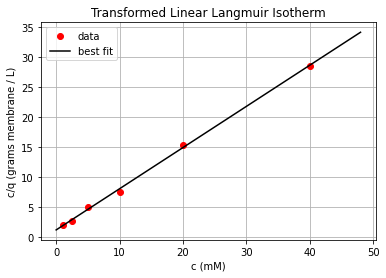
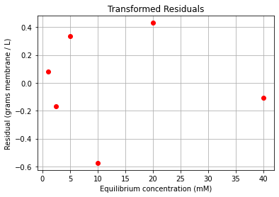
Interpretation (Regression Plot): We see an excellent fit with the transformed data. Or so it seems…
Interpretation (Transformed Residuals): We start with a disclaimer; it is very difficult to interpret residuals for 6 data points. Recall, our regression analysis assumes the experimental observation errors are normally distributed. It is nearly impossible to determine if 6 points are normally distributed.
Instead, we will focus on checking for any problematic trends in the residuals. We see:
The residuals are heteroskedastic, i.e., their variance is not constant. Notice the residuals near \(c=0\) and \(c=40\) are small, but the residuals between \(5 \leq c \leq 20\) are large.
There is only one data point at the extreme value \(x=40\). This means the data point has high leverage and influences the best fit. Large errors for this experiment can greatly influence fitted parameters.
The plot above uses the transformed variables. They were computed with the transformed variables x and y.
Next, we will define the second function which plots the fitted Langmuir isotherm without transformation and plots the non-transformed residuals. Notice the function can be directly reused for each regression strategy.
# define a function to plot Langmuir isotherm
def plot_langiso(c,q,K,Q,title):
'''
function to plot fitted Langmuir isotherm and data
Arguments:
c: independent variable i.e. concentration - experimental data [mM] (float vector)
q: membrane loading - experimental data [l/gram membrane] (float vector)
K: fitted parameter [1/mmol] (float scalar)
Q: fitted parameter [mol/gram membrane] (float scalar)
title: name of regression to add to title (string)
Returns:
nothing
'''
## evaluate the model
# determine maximum value of c
cmax = np.amax(c);
# define range of x to evaluate the model
c_span = np.linspace(0,1.2*cmax,50);
# evaluate the model
q_hat = Q*K*c_span / (1 + K*c_span)
# plot the best fit model
plt.figure()
plt.title('Langmuir Isotherm')
plt.plot(c_span,q_hat,'b-',label="Fitted Model")
plt.plot(c,q,'r.',label="Experimental Data")
plt.legend()
plt.grid(True)
plt.xlabel("Concentration (mM)")
plt.ylabel("Loading (mmol / grams membrane)")
plt.show()
## calculate the residuals
r = q - Q*K*c/(1+K*c)
## plot the residuals
plt.figure()
plt.plot(c,r,'ro')
plt.ylabel('Residual (mmol / grams membrane)')
plt.xlabel('Equilibrium concentration (mM)')
plt.grid(True)
plt.title('Residuals from {0} regression'.format(title))
plt.show()
# End: define a function to plot Langmuir isotherm
# Plot Langmuir isotherm
plot_langiso(c,q,Klin1,Qlin1,'first transformed')
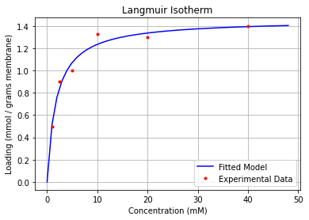
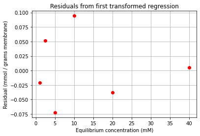
Interpretation (Regression Plot): By plotting in the original variables, we see the fit is not great. There is a significant residual for the \(c=10\) mM experiment.
Interpretation (Residuals): This residual plot has a very similar pattern to the transformed residual plot. (Notice the vertical axis is different). The interpreation from above also applies to this plot.
Step iii: Compute Covariance Matricies¶
Next, we will compute the covariance matrix for the fitted parameters \(\beta_0\) and \(\beta_1\).
We will start by computing the variance of the residuals. Recall the formula is:
Here \(n\) is the number of observations, \(p\) is the number of fitted parameters, and \(r_i\) is the residual for observation \(i\). An interesting property of linear regression is that the mean of the residuals is always zero.
We can write the above formula with linear algebra in one line of code:
# compute the residuals (using the transformed variables)
r = y - (x*slope + intercept);
# variance of residuals
var_r = r @ r / (n-p)
print("Variance of residuals =",var_r," (g / L)^2")
Variance of residuals = 0.16885199230665526 (g / L)^2
Recall from the previous class, stats.linregress does not directly compute the covariance of the linear regression parameters. Instead, we need to write the regression problem in matrix notation:
Observations: \(\vec{y} = [y_1, y_2, ..., y_n]^T\)
Fitted Parameters: \(\vec{\beta} = [\beta_0, \beta_1, ..., \beta_{m}]^T\)
Data / Feature Matrix:
For our transformed membrane, the feature matrix is:
# feature matrix, a.k.a. data matrix, a.k.a. predictor matrix
X = np.ones((n,2))
X[:,1] = c
print("X=\n",X)
X=
[[ 1. 1. ]
[ 1. 2.5]
[ 1. 5. ]
[ 1. 10. ]
[ 1. 20. ]
[ 1. 40. ]]
Next, we will compute the covariance matrix of the fitted parameters:
# assemble covariance matrix for regression parameters
cov_b = var_r * np.linalg.inv(X.transpose() @ X)
Finally, we will propagate the covariance matrix of the transformed fitted parameters, \(\mathbf{\Sigma_{\vec{\beta}}}\), to determine the covariance matrix of the desired isotherm parameters, \(\mathbf{\Sigma_{\vec{\theta}}}\).
Recall of model transformation:
We will define the vector of model parameters as \(\vec{\theta} = [K, Q]^T\).
In anticipation of applying the general nonlinear error propagation formula, we will calculate the following partial derivatives:
We can then assemble these gradients into the Jacobian matrix:
# Assemble gradient vectors for K and Q
gradK = np.array([-slope / intercept**2, 1/intercept])
gradQ = np.array([0, -1/slope**2])
print("\nGradient of K:",gradK)
print("Gradient of Q:",gradQ)
# Assemble gradient vector
jac = np.stack((gradK, gradQ));
print("\nJacobian Matrix:\n",jac)
Gradient of K: [-0.45190522 0.8115721 ]
Gradient of Q: [ 0. -2.12428953]
Jacobian Matrix:
[[-0.45190522 0.8115721 ]
[ 0. -2.12428953]]
For this problem, calculating the partial derivates was very straightforward; but for more complex expression, we can use a finite difference approximation. We’ll see this later in the case study.
We can now apply the general nonlinear error propagation formula:
# Apply nonlinear error propagation formula
cov_theta_lin1 = jac @ cov_b @ jac.transpose()
print("\nCovariance of Original Model Parameters (K,Q):\n",cov_theta_lin1)
Covariance of Original Model Parameters (K,Q):
[[ 0.01265455 -0.00218224]
[-0.00218224 0.00068943]]
Home Activity
Write down at least three questions or observations you have about the code for the first transformated regression model (all of Section 1A). We will start class by answering your questions.
Your Questions:
B. Paramter estimation using an alternate transformation and linear regression¶
Step i: Setup and Best Fit¶
We start with the Languir isotherm:
With a little bit of algebra, we obtain:
Class Activity
Identify \(x\), \(y\), \(\beta_0\), and \(\beta_1\) in the alternate transformed model.
Class Activity
Use stats.linregress to compute the best fit line. To maximize code reuse, save the results in variables slope and intercept.
# Add your solution here
slope = 1.3058364578345456
intercept = 0.6714412635365661
Class Activity
Determine the new formulas to compute \(K\) and \(Q\) from the new fitted parameters \(\beta_0\) and \(\beta_1\). We recommend writing this on paper first. To typeset your answer below, just double click on the markdown cell and edit the formula. You do not need to turn in your on paper work.
Class Activity
Compute \(K\) and \(Q\) from new model. Store your answers in the variances Klin2 and Qlin2.
## Reverse transformation to obtain Q and K and display results
# Add your solution here
print("\nK (alternate linear regression) = {0:0.1f} L/mmol".format(Klin2));
print("Q (alternate linear regression) = {0:0.1f} mmol/g_membrane".format(Qlin2));
K (alternate linear regression) = 0.5 L/mmol
Q (alternate linear regression) = 1.5 mmol/g_membrane
Class Activity
Plot the transformed model and the transformed residuals. Hint: When using the plot_liniso function, enter ’lin2’ as the fourth argument. This will add the appropraite units to the plot.
# Add your solution here
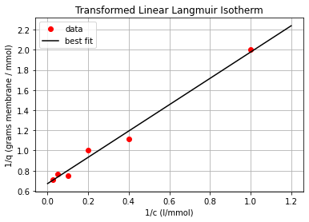
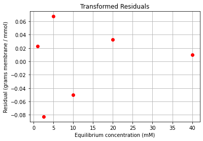
Class Activity
Interpret the plot. Write 3 bullet points (sentences) with your observations.
Your Observations:
Class Activity
Plot the Langmuir isotherm model and the (non-transformed) residuals. Hint: When using the plot_langiso function, enter ’first transformed’ as the fifth argument. This will add the appropriate title to the plot. Also remember to use Klin2 and Qlin2.
# Plot Langmuir isotherm
# Add your solution here
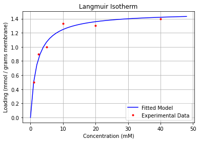
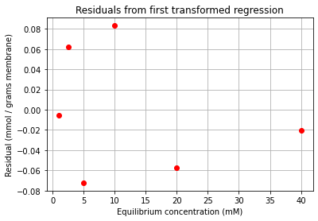
Class Activity
Interpret these plots. Write 3 bullet points (sentences) with your observations.
Your Observations:
Class Activity
Calculate the residuals and store in variable r2.
# Calculate residuals
# Add your solution here
Class Activity
Calculate the variance of the residuals. Store in variable var_r2.
# variance of residuals
# Add your solution here
print("Variance of residuals =",var_r2," (g / mmol)^2")
Variance of residuals = 0.0038915047452551866 (g / mmol)^2
Class Activity
Assemble the feature matrix and store in variable X2.
# matrix of predictors
# Add your solution here
print("X2 =\n",X2)
X2 =
[[1. 1. ]
[1. 0.4 ]
[1. 0.2 ]
[1. 0.1 ]
[1. 0.05 ]
[1. 0.025]]
Class Activity
Calculate the covariance of the linear regression parameters. Store the result in cov_b2.
# assemble covariance matrix for regression parameters
# Add your solution here
print("Covariance of Transformed (Linearized) Regression Parameters (1/KQ, 1/Q):\n",cov_b2)
Covariance of Transformed (Linearized) Regression Parameters (1/KQ, 1/Q):
[[ 0.00114359 -0.00167326]
[-0.00167326 0.00565609]]
Class Activity
Study the code below for the gradients of \(K\) and \(Q\) with respect to the new \(\beta_0\) and \(\beta_1\). Do you agree with this calculation? Did we make a mistake?
gradK2 = np.array([1/slope, -intercept/slope**2])
gradQ2 = np.array([-1/intercept**2, 0])
print("\nGradient of K:",gradK2)
print("Gradient of Q:",gradQ2)
Gradient of K: [ 0.76579268 -0.39375896]
Gradient of Q: [-2.21811442 0. ]
Class Activity
Assemble the gradients into the Jacobian matrix. Store the matrix in jac2.
# Add your solution here
print("\nJacobian Matrix:\n",jac2)
Jacobian Matrix:
[[ 0.76579268 -0.39375896]
[-2.21811442 0. ]]
Class Activity
Apply the multivariate general nonlinear error propagation formulation. Store the covariance matrix of the original model parameters in cov_theta_lin2.
# Apply nonlinear error propagation formula
# Add your solution here
print("\nCovariance of Original Model Parameters (K,Q):\n",cov_theta_lin2)
Covariance of Original Model Parameters (K,Q):
[[ 0.0025567 -0.00340395]
[-0.00340395 0.0056265 ]]
C. Parameter estimation using nonlinear regression¶
We will now apply nonlinear regression to our problem. First, we need to define a function to evaluate the model.
Class Activity
Fill in the missing line in model_func below.
## Code for parameter estimation using nonlinear regression
# define function for the model being fitted
def model_func(theta, c):
'''
Function to define model being fitted
Arguments:
theta: parameter vector (K, Q)
c: concentration(s) to evaluate (scalar or vector)
Returns:
qhat: predicted loading(s), (scalar or vector)
'''
# Add your solution here
return qhat
# End: define function for the model being fitted
Next we need to define a function to calculate the residuals for each data point.
Class Activity
Fill in the missing line in regression_func below.
# define function to return residuals of model being fitted
def regression_func(theta, c, q):
'''
Function to define regression function for least-squares fitting
Arguments:
theta: parameter vector
c: concentration(s) to evaluate (vector)
q: loading(s) to fit (vector)
Returns:
ls_func: evaluation of loss function
'''
qhat = model_func(theta,c)
# Add your solution here
return r
# End: define function to return residuals of model being fitted
Now we perform nonlinear regression.
Class Activity
Use the function optimize.least_squares to compute the best fit. Store the results in the variable theta_fit.
# Perform nonlinear parameter estimation
# initial guess
theta_guess = np.array([1, 1])
# nonlinear regression
# Add your solution here
# Extract fitted parameters and display results
Knl = theta_fit.x[0]
Qnl = theta_fit.x[1]
print("\nK (nonlinear regression) = {0:0.1f} l/mmol".format(Knl));
print("Q (nonlinear regression) = {0:0.1f} mmol/g_membrane".format(Qnl));
`ftol` termination condition is satisfied.
Function evaluations 20, initial cost 2.7019e-01, final cost 9.2968e-03, first-order optimality 1.11e-08.
K (nonlinear regression) = 0.6 l/mmol
Q (nonlinear regression) = 1.5 mmol/g_membrane
Class Activity
Plot the fitted model and residuals. Hint: Use the function plot_langiso. Enter ’nonlinear’ as the fifth argument.
# Add your solution here
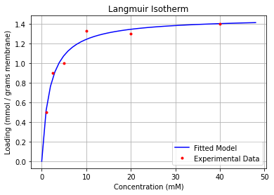
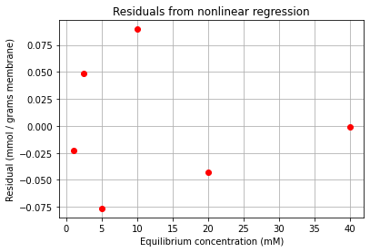
Class Activity
Interpret these plots. Write 3 bullet points (sentences) with your observations.
Your Observations:
We will complete the nonlinear regression analysis by estimating the covariance of the fitted parameters \(\mathbf{\Sigma}_{\vec{\theta}}\).
Class Activity
Calculate the residuals and store in r3. Next calculate the variance of the residuals and store in var_r3.
# Calculate residuals. Hint: use model_func
### BEGIN SOLUTON
# calculate residuals
r3= q - model_func(theta_fit.x, c)
### END SOLUTION
# Calculate the variance of the residuals
# Add your solution here
print("Variance of the residuals: ",var_r3,"(mmol/g)^2")
Variance of the residuals: 0.004648376875480317 (mmol/g)^2
Recall from the previous class the covariance matrix for nonlinear regression has a similar formula to the linear regression case:
where \(\mathbf{J}\) is the Jacobian of the residuals w.r.t. \(\vec{\theta}\):
This IS NOT the same Jacobian matrix for nonlinear error propagation. Does this formula look familar? Recall, for LINEAR REGRESSION, the covariance estimate is:
Class Activity
Compare the nonlinear regression and linear regression covariance formulas. Compute the elements of the Jacobian matrix for a linear model using \(\vec{\theta} = \vec{\beta}\). How are \(\mathbf{J}\) and \(\mathbf{X}\) related? Discuss then write one sentence.
Discussion:
Luckily, optimize.least_squares computes this Jacobian for us automatically.
print("J =\n",theta_fit.jac)
J =
[[-0.60433286 -0.3573991 ]
[-0.6402919 -0.5816669 ]
[-0.51189153 -0.73551125]
[-0.33990149 -0.84760183]
[-0.19914358 -0.91751568]
[-0.10832244 -0.95698376]]
Class Activity
Compute the covariance matrix \(\mathbf{\Sigma_{\vec{\theta}}}\). Store your answer in cov_theta_nl.
# assemble covariance matrix
# Add your solution here
# plot Langmuir isotherm
print("Covariance Matrix of Original Model Parameters (K,Q):\n",cov_theta_nl)
Covariance Matrix of Original Model Parameters (K,Q):
[[ 0.00887448 -0.00392218]
[-0.00392218 0.00306799]]
D. Comparison of Three Regression Approaches¶
First Transformation + Linear Regression
print("\nK (linear regression) = {0:0.3f} l/mmol".format(Klin1));
print("Q (linear regression) = {0:0.3f} mmol/g_membrane".format(Qlin1));
print("\nCovariance of Original Model Parameters (K,Q):\n",cov_theta_lin1)
K (linear regression) = 0.557 l/mmol
Q (linear regression) = 1.457 mmol/g_membrane
Covariance of Original Model Parameters (K,Q):
[[ 0.01265455 -0.00218224]
[-0.00218224 0.00068943]]
Second (Alternative) Transformation + Linear Regression
print("\nK (alternate linear regression) = {0:0.3f} L/mmol".format(Klin1));
print("Q (alternate linear regression) = {0:0.3f} mmol/g_membrane".format(Qlin2));
print("\nCovariance of Original Model Parameters (K,Q):\n",cov_theta_lin2)
K (alternate linear regression) = 0.557 L/mmol
Q (alternate linear regression) = 1.489 mmol/g_membrane
Covariance of Original Model Parameters (K,Q):
[[ 0.0025567 -0.00340395]
[-0.00340395 0.0056265 ]]
Nonlinear Regression
print("\nK (nonlinear regression) = {0:0.3f} l/mmol".format(Knl));
print("Q (nonlinear regression) = {0:0.3f} mmol/g_membrane".format(Qnl));
print("\nCovariance Matrix of Original Model Parameters (K,Q):\n",cov_theta_nl)
K (nonlinear regression) = 0.556 l/mmol
Q (nonlinear regression) = 1.464 mmol/g_membrane
Covariance Matrix of Original Model Parameters (K,Q):
[[ 0.00887448 -0.00392218]
[-0.00392218 0.00306799]]
Class Activity
Discussion the following question. Write a one sentence answer for each question.
Discussion:
How many significant figures are we estimating for \(Q\) and \(K\) based on the original data? Answer: Fill in here…
Do the three regression strategies give the same or different estimates for \(K\) (within reasonable significant figures)? Answer: Fill in here…
Do the three regression strategies give the same or different estimates for \(Q\) (within reasonable significant figures)? Answer: Fill in here…
Do the three regression strategies give the same estimate for uncertainty (covariance)?
Which regression technique is best suited for this problem? Answer: Fill in here…
2. Estimate Batch Processing Time with Numeric Integration¶
Our ultimate goal is to design a point-of-use semi-batch adsorptive membrane system to remove Pb from water. Water with contaminant concentration \(c_{in} =\) 150 parts per billion (ppb) enters the system. Some of the contaminant adsorbs such that the outlet concentration, \(c(t)\), is in equilibrium and can be related to the sorbent loading, \(q(t)\), using the Langmuir isotherm \(q=f(K,Q)\). Using a differential mass balance (you will learn more about this in Transport I and II as Juniors), one can derive:
where \(m = \) 1 kg is the total mass of the membrane and \(F = \) 2 ml/s is the flow rate of water. We will operate the membrane until time \(t_f\) where \(c(t_f) = c_{max} = \) 15 ppb, which corresponds to maximum contaminant limit from the US EPA. At time \(t_f\) the membrane is regenerated (e.g., washed with a low pH solution to remove the Pb contaminant) and the operating cycle repeats. For simplicity, we will assume the membrane is completely regenerated such that \(q(0) = 0\).
A. Model Manipulation and Setup¶
We want to integrate the differential equation above to find the final time \(t_f\) where \(c(t_f) = c_{max} = \) 15 ppb. This is a boundary value problem. We have three choices for a solution approach:
Analytically integrate the differential equation. (You can do this with WolframAlpha, but the answer is complicated.)
Numerically integrate the differential equation with
solve_ivp. Then use interpolation or Newton’s method to find the value of \(t_f\) that satisfies the boundary condition.Rearrange the model then integrate with a quadrature rule.
Let’s use option 3.
We will first start with the Langmuir isotherm:
We can rearrange the isotherm to obtain: $\( c(t) = \frac{q(t)}{Q \cdot K - q(t) \cdot K} \)$
We will then substitute the expression for \(c(t)\) into the differential equation to obtain:
For solution approach 2, we can numerically integrate this differential equation. But for solution approach 3, we will rearrange the equation as follows:
Integrating both sides of the equation gives:
By assuming \(t_0=0\), we get:
Because \(\frac{m}{F}\) is a constant, we can move it out of the integral:
We can approximate this integral with a quadrature rule.
B. Numeric Integration¶
Class Activity
Complete the function below to estimate \(t_f\).
# Code for numerical integration and calculation of tf
# Define a function to numerically integrate the differential mass balance to give tf
def calculate_tf(theta,LOUD=False):
'''
Calculate the elapsed time (tf) in seconds before the bed needs to be regenerated
Arguments:
theta: vector of model parameters where K(l/mmol) = theta[0] and Q (mmol/g_membrane) = theta[1] (floats)
LOUD: toggle on/off print statement
Returns:
tf (hours) : time at which the membrane needs to be regenerated (float)
'''
K = theta[0]
Q = theta[1]
cin_ppb = 150 # ppb
clim_ppb = 15 # ppb
F = 2*1e-3; # [L/s]
# Convert cin and clim to mM units, to make it consistent with our model
# ppb = 1mg/m3 = (1x10^-3/207.2) mol / (1000 l) = (1/207.2) x 10^-3 mM
cin = (cin_ppb/207.2)*1e-3 # mM
clim = (clim_ppb/207.2)*1e-3 # mM
q0 = 0 # [mmol/g-membrane]
m = 1000 # g-membrane
# define a lambda function for the Langmuir isotherm
# save the function in the variable 'calc_q'
# Add your solution here
## Step 1: Calculate qf using isotherm
qf = calc_q(clim)
if LOUD:
print("qf =",qf,"mmol/g")
## Step 2: Apply quadrature rule to integrate dq
#
# Define a lambda function for the integrand
# Then use 'integrate.quad'
# Finally, calculate 'tf'
# Add your solution here
# Convert from seconds to hours
return tf / 3600
# End: Define a function to numerically integrate the differential mass balance to give tf
We will now test our function:
# Unit Test:
Qtest = 1.5 # mmol/g_membrane
Ktest = 0.6 # L/mmol
print("Unit Test:")
print("K =",Ktest,"L/mmol")
print("Q =",Qtest,"mmol/g_membrane")
tf_test = calculate_tf([Ktest,Qtest],LOUD=True)
print("tf = {0:0.2f} hours".format(tf_test));
Unit Test:
K = 0.6 L/mmol
Q = 1.5 mmol/g_membrane
qf = 6.515161020998122e-05 mmol/g
tf = 13.17 hours
Success. We have calculated the regeneration time of the membrane system.
3. Uncertainty Propagation (Nonlinear Formula)¶
We now want to propagate the covariance of our fitted parameters \(\mathbf{\Sigma_{\vec{\theta}}}\) to estimate the uncertainty in the calculated batch time \(\sigma_{t_f}\). To do this, we will apply the general nonlinear error propagation formula:
This requires us to compute (or estimate!) the gradient vector:
Note: During some class notes we define the gradiant vector with a transpose, which requires the transpose to move in the error propagation formula. Either way is common in textbooks. Our apologies for the inconsistency and any confusion. Here is a good rule: just make sure the matrix dimensions work for multiplication and add a transpose if needed!
A. Define Functions¶
Class Activity
Complete the function below to estimate \(uc_tf\).
# define a function to perform nonlinear error propagation
def nonlinear_error_propagation(theta,cov_theta,LOUD=True):
'''
Function to perform nonlinear error propagation through regeneration time calculations
using forward finite difference gradient
Arguments:
theta: vector of model parameters where K(l/mmol) = theta[0]
and Q (mmol/g_membrane) = theta[1] (vector floats)
cov_theta: covariance matrix of theta (matrix of floats)
LOUD: toggle on/off printing
Returns:
uc_tf (hours) : uncertainty (standard deviation) in time at which the membrane needs to be regenerated
'''
## Step 1. Calculate gradient of tf calculate to Q and K
# We will use finite difference!
tf_ref = calculate_tf(theta)
n = len(theta)
theta_copy = theta.copy()
grad = np.zeros(n)
eps = 1E-6
# Instructions: fill in the three missing lines below.
for i in range(n):
# perturb
# Add your solution here
# forward finite difference
# Add your solution here
# reset
# Add your solution here
if LOUD:
print('grad=',grad)
## Step 2. Apply nonlinear error propagation formula
# Instructions: fill in the missing line
# store the result in the variable 'var_tf'
# Hint: Numpy is smart enough to know that 'grad' is a vector. It will add a transpose as
# need to matrix the matrix dimensions.
# Add your solution here
## Step 3. Calculate standard deviation
uc_tf = np.sqrt(var_tf)
print("\nUncertainty (standard deviation) of tf: {0:0.2f} hours".format(uc_tf))
return uc_tf
# end: define a function to perform nonlinear error propagation
Let’s test our function with the results for the first transformed model.
sigma_tf_test = nonlinear_error_propagation([Klin1, Qlin1], cov_theta_lin1)
grad= [21.32635417 8.14794015]
Uncertainty (standard deviation) of tf: 2.25 hours
Great, our function works. We can also calculate a 95% confidence interval for the estimated batch time.
Class Activity
Discuss the code below with a partner. Then write a comment to explain the calculation.
# define a function to print the 95% confidence interval
def conf_int(t, t_uc, dof):
'''
function to calculate, print and return the 95% confidence interval for
tf
args
t (s): regeneration time for the membrane (float)
t_uc (s) : uncertainty (standard deviation) in t (float)
dof (-) : degrees of freedom in the system (int)
returns
t_cint (s) : 95% confidence interval for t (float vector)
'''
## Add a comment here to explain this line
t_cint = t + t_uc*stats.t.ppf([.025, .975], dof)
print("\n95% confidence interval for tf: [{0:0.2f} hr, {1:0.2f} hr]".format(t_cint[0],t_cint[1]));
return t_cint;
Let’s test our function with the results for the first transformed model.
cint_tf_test = conf_int(tf_test, sigma_tf_test, n-p)
95% confidence interval for tf: [6.93 hr, 19.40 hr]
Note we used tf_test for this unit test which does not correspond to our regression results. Do not attempt to interpret the above results.
Now we can apply these two functions to our three regression strategies.
B. First Transformation + Linear Regression¶
Class Activity
Calculate the uncertainty in the \(t_f\) predictions and a 95% confidence interval.
# Add your solution here
grad= [21.32635417 8.14794015]
Uncertainty (standard deviation) of tf: 2.25 hours
95% confidence interval for tf: [5.64 hr, 18.11 hr]
C. Second (Alternate) Transformation + Linear Regression¶
Class Activity
Calculate the uncertainty in the \(t_f\) predictions and a 95% confidence interval.
# Add your solution here
grad= [21.79237003 7.52398947]
Uncertainty (standard deviation) of tf: 0.65 hours
95% confidence interval for tf: [9.41 hr, 13.00 hr]
D. Nonlinear Regression¶
Class Activity
Calculate the uncertainty in the \(t_f\) predictions and a 95% confidence interval.
# Add your solution here
grad= [21.41427393 8.13841288]
Uncertainty (standard deviation) of tf: 1.70 hours
95% confidence interval for tf: [7.18 hr, 16.64 hr]
E. Discussion¶
Class Activity
Compare the uncertainty estimates for batch time from the three regression approaches. Then write one sentence to answer each of the following questions.
Disucssion:
Order the three regression estimates from smallest to largest uncertainty in batch time. Answer: Fill in here…
Which one regression result do you trust more than the other two? Answer: Fill in here…
Waiting too long to regenerate the membrane can result in accidental lead exposure. Based on our analysis, what is the maximum batch time you recommend before regenerating the membrane? Answer: Fill in here…
4. Monte Carlo Uncertainty Propogation¶
We will revisit this notebook in a later chapter.
To keep this example concise, we will only apply MC uncertainty propogation to the nonlinear regression method. We recommend nonlinear regression for most engineering examples.
A. Inspect Residuals¶
We will start by characterizing the residuals for the nonlinear regression case. Let’s start by plotting a histogram:
plt.hist(r3)
plt.xlabel("Residuals (mmol/g)")
plt.ylabel("Count")
plt.title("Histogram of Residuals for Nonlinear Regression")
plt.show()
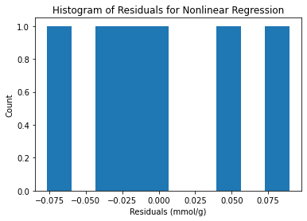
Becase there are only 6 data points, this plot is not very revealing. We do not see any extreme outliers, which is pretty much all we can check. If we had more than 10 or 20 samples, we could expect the histogram of residuals to be approximately normally distributed.
Finally, recall that the variance of the residuals is stored in var_r3.
print("Variance of the residuals: ",var_r3,"(mmol/g)^2")
Variance of the residuals: 0.004648376875480317 (mmol/g)^2
B. Monte Carlo Python Code¶
Class Activity
Fill in the steps in the MC code below.
# Number of Monte Carlo samples
nmc = 1000;
# Declare a matrix to save the Monte Carlo samples
# Rows: simulations
# Columns: fitted parameters
theta_mc = np.zeros((nmc,2))
# Declare a vector to save Monte Carlo sample
tf_mc = np.zeros(nmc)
# Estimate fitted paramters for the random samples
for i in range(nmc):
# Add noise to the experimental data. Store the 'new' data in the vector 'noisy_data'
# Add your solution here
## Perform nonlinear regression
# Add your solution here
## Store the results from regression
# Add your solution here
## Calculate tf
# Add your solution here
# end main MC loop
C. Visualize and Interpret MC Results: Fitted Parameters¶
We will start by inspecting historgrams of the fitted parameters:
plt.hist(theta_mc[:,0])
plt.xlabel("K (1/mM)")
plt.ylabel("Frequency")
plt.show()
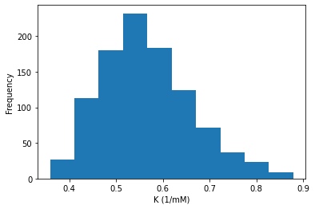
Class Activity
Make a histogram for \(Q\).
# Add your solution here
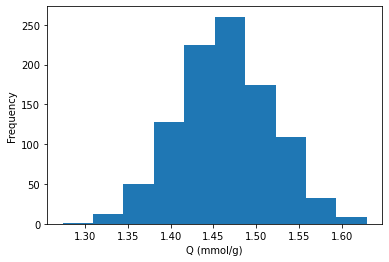
We can also make a scatter plot to see the relationship between uncertainty in \(K\) and \(Q\):
plt.scatter(theta_mc[:,0], theta_mc[:,1])
plt.xlabel("K (1/mM)")
plt.ylabel("Q (mmol/g)")
plt.grid(True)
plt.show()
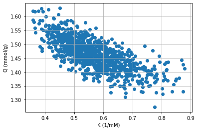
We can also compute the covariance between \(K\) and \(Q\). We’ll start by loading our MC results into a Pandas DataFrame:
mc = pd.DataFrame(theta_mc,columns={"K","Q"})
mc.head()
| Q | K | |
|---|---|---|
| 0 | 0.543323 | 1.439788 |
| 1 | 0.836513 | 1.328493 |
| 2 | 0.517219 | 1.469476 |
| 3 | 0.612102 | 1.448838 |
| 4 | 0.630198 | 1.435805 |
Then we can compute covariance and correlation:
mc.cov()
| Q | K | |
|---|---|---|
| Q | 0.009217 | -0.003801 |
| K | -0.003801 | 0.002993 |
mc.corr()
| Q | K | |
|---|---|---|
| Q | 1.000000 | -0.723613 |
| K | -0.723613 | 1.000000 |
Let’s compare against our covariance matrix from Section 1C:
print("Covariance Matrix of Original Model Parameters (K,Q):\n",cov_theta_nl)
Covariance Matrix of Original Model Parameters (K,Q):
[[ 0.00887448 -0.00392218]
[-0.00392218 0.00306799]]
These results are similar! Why do we not expect them to match exactly?
D. Visualize and Interpret MC Results: Batch Time¶
Class Activity
Make a histogram for \(t_f\).
# Add your solution here
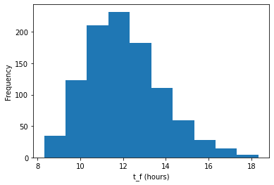
We can also calculate the mean and median batch time:
print("mean batch time =",np.mean(tf_mc)," hours")
print("median batch time =",np.median(tf_mc)," hours")
mean batch time = 12.053119807330656 hours
median batch time = 11.89763249975178 hours
As well as the standard deviation of batch time from the Monte Carlo simulations:
# Choose ddof=0 (default) versus ddof=1 with N=1000 do not matter that much
print("standard deviation of batch time =",np.std(tf_mc), "hours")
standard deviation of batch time = 1.7391541439633778 hours
We can also calculate the 2.5%-ile and 97.5%-ile of batch time from the MC simulations.
print("2.5%-ile batch time =",np.percentile(tf_mc,2.5)," hours")
print("97.5%-ile batch time =",np.percentile(tf_mc,97.5)," hours")
2.5%-ile batch time = 9.139668461665977 hours
97.5%-ile batch time = 15.961301994903163 hours
Finally, let’s compare the standard deviation and percentiles to \(\sigma_{t_f}\) and the 95% confidence interval calculated in Section 3D (code copied for convienence):
# Calculate tf using parameters from nonlinear regression
tf_nl = calculate_tf([Knl, Qnl]);
# Code for uncertainty propagation with nonlinear regression
sigma_tf_nl = nonlinear_error_propagation([Knl, Qnl], cov_theta_nl)
# 95% confidence interval for nonlinear regression
cint_tf_nl = conf_int(tf_nl, sigma_tf_nl, n-p)
grad= [21.41427393 8.13841288]
Uncertainty (standard deviation) of tf: 1.70 hours
95% confidence interval for tf: [7.18 hr, 16.64 hr]
Class Activity
Compare the uncertainty estimates in batch time and the standard deviation.